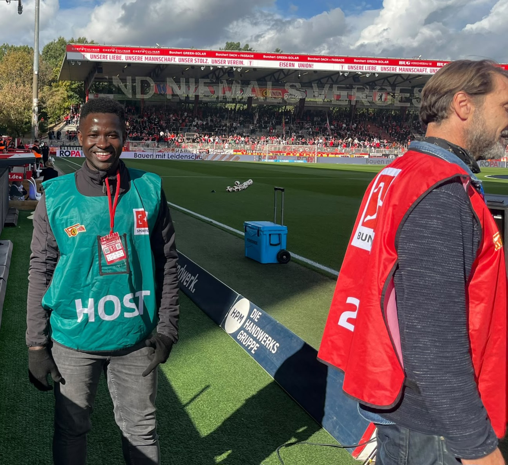

MSc Finance & Investment | MSc Data Analytics | BSc Business Administration | Microsoft Certified IT Support | UEFA C Coach
Exploring research, IT support, data analytics, finance, operations, AI, and technology — applying knowledge to real-world projects.
Highlights from recent high-stakes media infrastructure and live sports production contracts in Berlin, managing precision technical setups and cross-functional field operations.

Role: Broadcast Operations Support (fernsehkieker GmbH)
Executed advanced on-site technical deployment, spatial coordination, and cable infrastructure support for high-profile live broadcasts—including ZDF cultural productions at the Konzerthaus Berlin (Gendarmenmarkt) and DFL Bundesliga matchdays (such as Union Berlin vs. Elversberg) in collaboration with Sportcast, Sky, DAZN, and ARD.